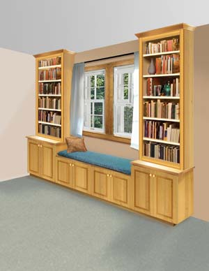
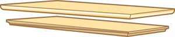
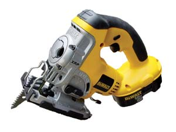
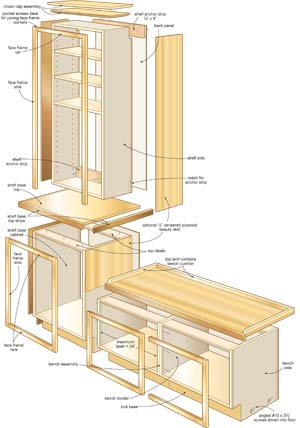
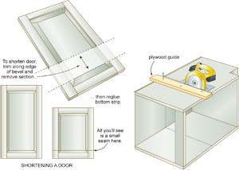

Your favorite books within easy reach, a comfy seat and lots of warm, natural light - these are the three features that make an inviting book nook. Combine a little bit of vision, a little bit of know-how and a few key tools, and you can custom build this combination window seat/bookshelf/storage area for your home. And it won’t cost a whole lot if you remember two things: salvage and simplicity.
Keep your design simple, make use of reclaimed cabinets (or inexpensive ready-made shelf units), and success is within reach of anyone with intermediate woodworking skills. Yes, every nook will be a little different, but that’s OK. Custom work like this needn’t be daunting because the design principles and construction skills you need remain the same in every case. That’s what you’ll find below: a toolbox of universal concepts, techniques and solutions that you can apply to your specific project.
Every book nook needs shelves, a seat and a window. These are the essentials, but because the window and its location sets the stage for the rest of the project, start there. South-facing windows offer direct sunlight, which is nicest in northern climates. Light from north facing windows is less intense and easier on the eyes.
Ideally, you want to choose a window that is within 30 to 42 inches of the floor. Any higher, and the seating area won’t be as well lit. Any lower, and there won’t be a place to support your back. You’ll also need a location with at least 24 inches of free wall space on both sides of the window for shelves (more is better).
Have a corner window? You’ll enjoy a cozier book nook in this location, though construction might be more challenging. It’s more complicated to join a base cabinet and bench at 90 degrees because it interferes with the swinging action of the doors.
If the window you choose is old and tired, do a tune-up or replace it. You could do this job after the window seat is installed, but why make the upgrade any harder than it has to be? It’s easier to work without shelves and a bench in the way. (For help, see Install Your Own Windows.)
You could build your own shelves and bench from scratch, but before you do, look around. Every day thousands of perfectly good kitchen cabinets are “upgraded,” often unnecessarily. You can save substantial time, money and resources by making use of reclaimed cabinets and shelves. They’re available at little or no cost from kitchen cabinet stores, who almost always keep the ones they replace. (Call ahead and leave your name, so they can contact you when units become available.)
Our guideline plan (see Image Gallery) assumes the use of reclaimed lower kitchen cabinets for both the bench and shelf bases. These are ideal because they include doors and kick bases. Our shelves are modified versions of ready-made bookcases, or you could use reclaimed shelves there, too.
The two shelf bases create a “nook” effect by being taller than the bench. If you can find a matching pair of narrow cabinets as salvage, terrific. If not, slice them from a longer cabinet assembly using the techniques found in “Cutting on a Dime,” below. The bench also is easy to make from reclaimed lower kitchen cabinets, though you’ll have to cut them down in height. Aim for an overall sitting height of 16 to 18 inches, or whatever’s comfortable given the cushions you’ll be using.
Each construction will be different, but all designs depend on three things: the salvageable cabinets you have access to, the size of these cabinets in relation to your available wall space, and the level of modification or building techniques you feel comfortable completing with the tools you have.
Got a motley combination of different cabinets and shelves coming together to create your book nook? No problem - the shelves, seat and shelf bases will almost certainly look different from one another as you mix and match these parts. Also, there will probably be a few new screw heads to hide, and perhaps a few less-than-perfect cuts from trimming operations where you sliced the cabinets down to size.
Fix these flaws by covering them with cabinet-grade veneered plywood that is a quarter-inch-thick. Saw whatever pieces are needed to cover all visible cabinet surfaces, then glue them on. Add new, solid-wood face frames to cover the front edge of the cabinets and shelves, and you’re ready to finish.
It’s one thing to have a book nook that looks good, but safety should be the top priority. The main issue is ensuring that fully loaded bookshelves don’t topple forward. This is especially important when working with ready-made or salvaged cabinets.
All three parts of your book nook must be fastened to the wall, but the upper shelves in particular must be solid and stable. To be certain, you’ll need to do more than just drive screws through the thin back panels you’ll find on most ready-made shelves. The plan below shows how two anchor strips are incorporated into the shelf design. This is key. They’re typically made of three-quarter-inch-thick by 4-inch-wide pieces of solid wood that provide a strong foundation for mounting screws that extend into wall studs.
Mounting strips must fit into notches cut in the top and bottom back corners of the shelf sides, and secured with two screws at each end (see plan for details). In fact, mounting strips like these should be installed along the back of all three components: the bench, the shelf bases and the shelves.
If you’re working with salvaged cabinets, pry the thin back panel off, cut three-quarter-by-4-inch notches for mounting strips using a jigsaw, fasten the strips with screws, then replace the back panel. It doesn’t matter that the ends of the strips will be visible along the shelf sides. You can cover the surfaces later, giving them a consistent, refined appearance.
Will you be building some or all of the book nook components from scratch? It’s really not difficult, especially if you use three-quarter-inch-thick veneered plywood or particleboard. A table saw, a bottle of glue, some 2-inch finishing nails and a hammer are the basic tools you’ll need. Alternating wood grain direction on the edges of plywood and particleboard make it possible to create strong butt joints using only glue and finishing nails. Cap any visible edges of the bench, shelf base and shelves with three-quarter-inch-thick by 2¼-inch solid wood and you’re done. The plan provides design guidance for making all parts of a build-it-yourself book nook.
What about the cabinet doors? Most building supply outlets offer ready-made cabinet doors that are ideal if you’re building your window seat from scratch. If you’ll be using salvaged doors, get them first, then build your shelf base cabinet and bench to suit.
Locate wall studs, remove the baseboard, align all project parts with a level and don’t skimp on the mounting screws. These are the tricks of the trade when it comes to installing an attractive and stable book nook.
Start work with a tape measure, a roll of masking tape, a 24-inch level, some 3-inch-long deck screws and a cordless drill. Mark the wall area that the nook will occupy using masking tape, then use a stud finder to locate structural framing members hidden behind the wall surface. This is where you’ll need to drive screws to get a good grip.
Once you think you’ve found studs, double check by driving a screw into the wall. If you find solid wood, great! Mark the location just above the masking tape outline. If not, that’s OK, too. Drive your test screw in other locations until you hit something solid. It doesn’t matter if you mark the wall with a bunch of holes, because the bench and shelves will cover them. Premarking wall stud locations above the cabinet outlines lets you find the studs later, when the shelves and bench are in place and ready to be anchored.
Begin installation by sliding the bench into position, check to make sure it’s level and use shims to get the orientation just right. Anchor the bench to the wall with screws driven through the mounting strip and into the wall studs, as shown in the plan. Choose a screw that’s long enough to go through the cabinet, through the wall surface, and an inch into the underlying wall stud. You’ll find that #10 x 2½- or 3-inch flathead wood screws work well in most situations. Increase their holding power and improve their appearance by using cup washers underneath the screw heads. Also, drive a couple screws on an angle through the sides of the bench at the bottom and into the floor. These screws will be hidden later when you add the shelf base units.
Bring the two shelf base cabinets into position flanking each side of the bench, and fasten them in two separate places: at the back into the wall studs (as you did with the bench), and through the sides into the ends of the bench. All of these screws benefit from cup washers both for strength and aesthetics. You’ll see the side screws quite plainly when you open the doors, so be sure to make them look good.
If you’ve been careful to level the shelf base cabinets during installation, then the shelves themselves should sit plumb and level on top of them on their own. But check anyway before fastening the shelves to the wall with screws driven through the two mounting strips.
Do you want crown molding around the top of your shelves? It’s tricky applying this in the usual way, but there is another option. See “Easy Crown Molding” below for an attractive alternative to the conventional approach.
This project will do far more for your home than the modest amount of time and funds required would suggest. It’s just one more example of how self-reliance and imagination can multiply to make your home a better place.
You can save substantial time, money and resources by making use of reclaimed cabinets and shelves. Follow the guidelines found in Step 2 and you’ll see how easy it can be to turn old, mismatched and unwanted units into attractive woodwork that can add value to your home.
Crown molding adds beauty to the upper ends of this project like nothing else can, but it’s not easy to install without practice. That’s why you might consider a crown cap instead.
Simply make a panel of three-quarter or 1½-inch-thick solid wood that’s slightly larger than the top of the book nook shelves. Angle or rout decorative details on the three edges that will face outward after installation. Fasten the crown cap to the top of the shelves with screws, and you’re done. Consider adding two crown caps - the top one larger than the bottom - for a deeper, richer appearance. Although this approach uses more wood than traditional crown molding, it eliminates the need to complete fancy mitre cuts. Crown caps are also much stronger than crown molding, an advantage if the book nook ever needs to be moved.
If you opt to use salvaged cabinets for some or all of your book nook, you’ll almost certainly need to trim them in some way. Perhaps you’ll find a set of lower kitchen cabinets for the bench, though of course they’d be too tall. Maybe you’d like to make an existing set of shelves narrower so they fit in your space. Or how about shortening a set of cabinets that are perfect for the base, but just too long?
One must-have tool for trimming the outer surface of cabinets is a hand-held circular saw that can be used to follow a strip of wood temporarily screwed to the cabinet to guide the blade. Ordinary electric saws work fine in this application, though a cordless is more maneuverable.
Start by determining the final width or length of cabinet you need, then mark the outside surfaces in pencil. Next, position a straight strip of wood far enough over on the waste side of this line so it guides the saw cut. The factory-cut edge of a piece of three-quarter by 5-inch plywood makes a nice, straight cutting guide. Secure it with a 1¼-inch deck screw every 24 to 36 inches before making the cut.
If your cabinet is large enough to have internal dividers, you’ll find a jigsaw essential for slicing these parts. All models let you cut in close quarters, though the DeWalt DC 330K jigsaw cuts closest of all. It uses a triangular shape blade that permits flush cutting against 90 degree surfaces. A Japanese handsaw also is helpful for cutting next to flush surfaces.
Face frame: A square or rectangular wood frame that surrounds a cabinet opening.
Kick base: A recessed zone common around the bottom of kitchen cabinets.
Particleboard: Interior-grade sheet goods made from sawdust glued together.
Plywood: A sheet building material made of layers of thick veneer glued together.
Shim: A wedge-shape piece of wood used to level or fill space.
Veneer: A thin slice of wood that’s often applied to cabinet-grade plywood or particleboard.
|
 LEN CHURCHILL This built-in windowseat/bookshelf can be an attractive addition to your home. |
 LEN CHURCHILL This “crown cap” is a quick and easy substitute for complicated crown molding. |
 STEVE MAXWELL The DeWalt DC 330K jigsaw is a handy tool for removing internal dividers in reclaimed cabinets. |
|
 LEN CHURCHILL While your specific design may be a little different, all book nooks have the same basic components. |
 LEN CHURCHILL When resizing salvaged cabinets, attention to detail is key. |
|